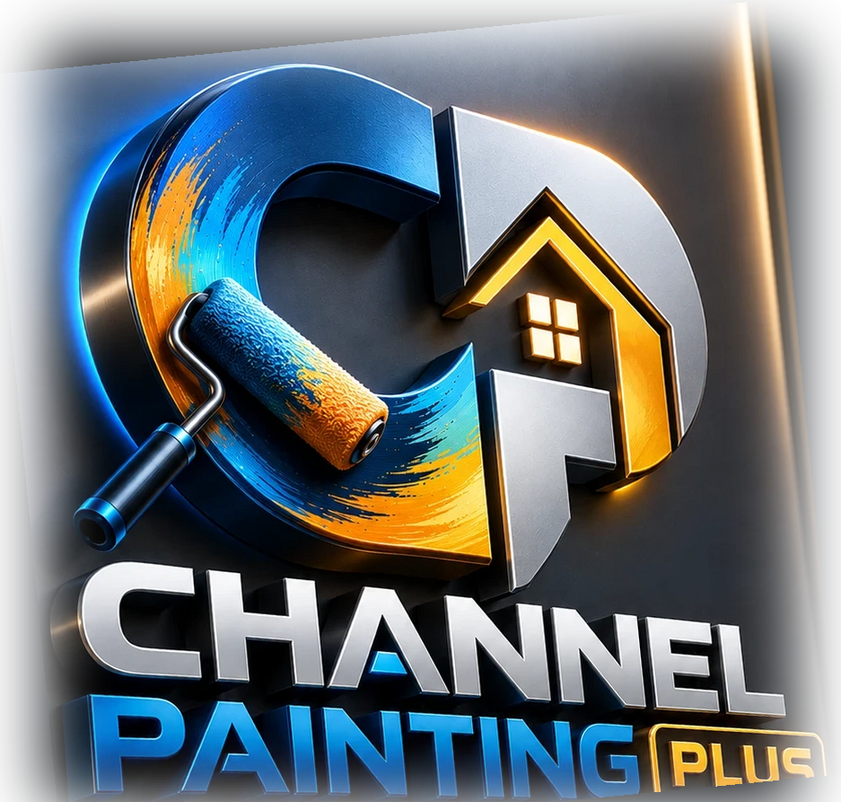

Pintura · Carpintaria · Drywall · Siding e telhado · Piso e azulejo · Reforma
Pintor, carpinteiro, drywall, siding, telhado. O ofício muda. A dor é a mesma: ninguém te ensinou a cobrar, a organizar e a crescer aqui nos Estados Unidos. O Channel Painting Plus ensina, em português, do jeito que se fala no job.
Do Brasil para quem pinta nos Estados Unidos.
Nasceu na pintura. O Plus é pra todo profissional que trabalha com casa.Aprenda · Aplique · Administre · Evolua

Não importa se você pinta, bate prego ou sobe no telhado. Estas aparecem pra todo mundo.
Você trabalha de segunda a sábado. Às vezes domingo. Chega o fim do mês e você não sabe pra onde foi.
Na hora de dar o preço, aperta. Você baixa pra garantir o job e depois trabalha quase de graça.
Você vai, mede, manda o preço. O cliente americano some e você nunca descobre por quê.
Terminou, recebeu, foi embora. Meses depois o cliente liga reclamando, e você volta sem cobrar.
Seguro, imposto, LLC. Parece outro mundo. O medo de errar faz você deixar tudo pra depois.
Seu trabalho vem de indicação. Quando o frio chega, o telefone para de tocar.
Você faz melhor que muita gente que tem empresa. Mesmo assim continua pegando sub, sem ver a saída.
Se você se reconheceu em duas ou mais, continue lendo. Tem um motivo pra isso acontecer.
Cada ofício tem uma dor que só quem faz conhece.
O cliente compara o seu preço com o de quem cobra metade. Aí o serviço mal feito vira problema, e a fama ruim sobra pra todos.
Você abre e encontra mais problema do que o combinado. O cliente quer pagar o preço do começo.
Seu trabalho some debaixo do trabalho do próximo. Se algo aparece depois, a culpa volta pra você. E o atraso de quem veio antes cai no seu prazo.
Dia de chuva é dia sem ganhar. O trabalho é pesado e no alto. E se alguém se machuca, você não sabe quem paga.
Um detalhe fora do lugar fica ali pra sempre. O cliente vê todo dia, e você ouve falar dele por muito tempo.
Cada visita vira mais um favor. Um conserto puxa outro, e no fim o dia inteiro valeu pouco.
Seu ofício não está aqui? As dores de cima continuam sendo suas.
Você aprendeu o seu ofício na prática. Ninguém te deu aula de como cobrar. De como falar com o cliente. De como organizar uma empresa ou ter trabalho o ano inteiro.
No Brasil isso já era difícil. Aqui, com outra língua e outras regras, fica mais difícil ainda.
O resultado é conhecido. O profissional bom trabalha dobrado e fica no mesmo lugar.
Não é falta de talento. É falta de caminho.
É esse caminho, organizado.
Um canal em português para o profissional brasileiro que trabalha com casa nos Estados Unidos. Nasceu na pintura. O Plus é pra quem pinta e pra quem trabalha do lado: carpintaria, drywall, siding, telhado, piso, reforma.
Conteúdo curto e direto sobre o que ninguém ensina no job: fazer bem feito, escolher certo, administrar e crescer.
Uma coisa de cada vez. Na ordem certa.
Aprenda · Aplique · Administre · Evolua
Quem pula a gestão fica bom no ofício e apertado no fim do ano.
Passo a passo
Materiais e técnicas
Gestão e preços
Crescimento profissional
Não vamos te mostrar número bonito nem depoimento que não existe. Vamos te mostrar o compromisso.
Explicado em português, com o termo em inglês que você ouve na obra.
Dá pra ler no intervalo do almoço, sem enrolação.
Se não temos certeza, não publicamos.
O canal não empurra produto, marca nem serviço pago.
Conteúdo de carpintaria, drywall ou telhado é feito ou conferido por quem trabalha com isso.
Um pintor brasileiro com empresa própria nos Estados Unidos desde 2002. Tudo o que está aqui foi aprendido no job, não em livro.
Aqui vão entrar histórias de profissionais brasileiros que trabalham com casa e passaram por essas dores. Sempre com nome, cidade, ofício e autorização de quem contou. Nada inventado.
Quero contar a minha históriaConteúdo novo toda semana, direto no seu e-mail. Curto, em português, sobre as dores desta página.
Você sai quando quiser. Seu contato não é vendido nem passado pra ninguém.Receber o conteúdo não custa nada.
Serve. O canal nasceu na pintura, mas preço, cliente americano, papelada e inverno parado são dores de todo profissional que trabalha com casa. O Plus existe pra você.
Porque foi na pintura que tudo começou. O Plus é o que vai além do pincel: os outros ofícios da casa e o lado do negócio que ninguém ensina.
A parte de gestão, preço e crescimento serve pra todos desde já. Conteúdo próprio de cada ofício entra aos poucos, sempre com quem é do ofício.
Não. Tudo é em português. As palavras que você ouve no job, como estimate, crew e LLC, aparecem em inglês e explicadas.
Serve. O conteúdo começa do básico e vai subindo. Quem pega job de sub hoje encontra por onde começar.
Tem. Boa parte do conteúdo é sobre preço, organização e crescimento. É justamente onde quem já tem crew costuma travar.
Não. O canal explica em linguagem simples o que existe e o que perguntar. Abertura de empresa, seguro e imposto devem ser feitos com um contador ou profissional habilitado no seu estado.
Toda semana, por e-mail. Você sai quando quiser.